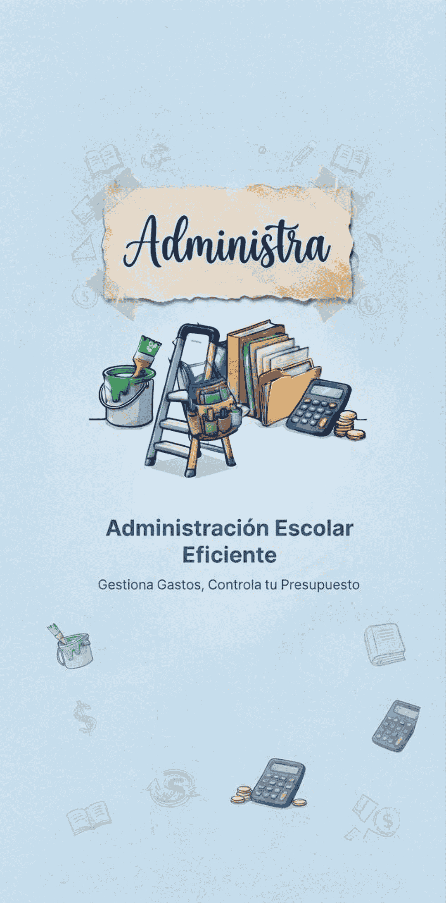

No se puede establecer conexión con el servidor
📱 Estás trabajando sin conexión a internet.
💾 Los datos se guardarán localmente y se sincronizarán automáticamente cuando recuperes la señal.
⚡ Las operaciones realizadas offline se sincronizarán al volver a conectar
Administra v1.0.0 • Gestión financiera y escolar
amayasily
💡 Consejo: Puedes seguir usando la app sin conexión
Los cambios se guardarán y sincronizarán automáticamente